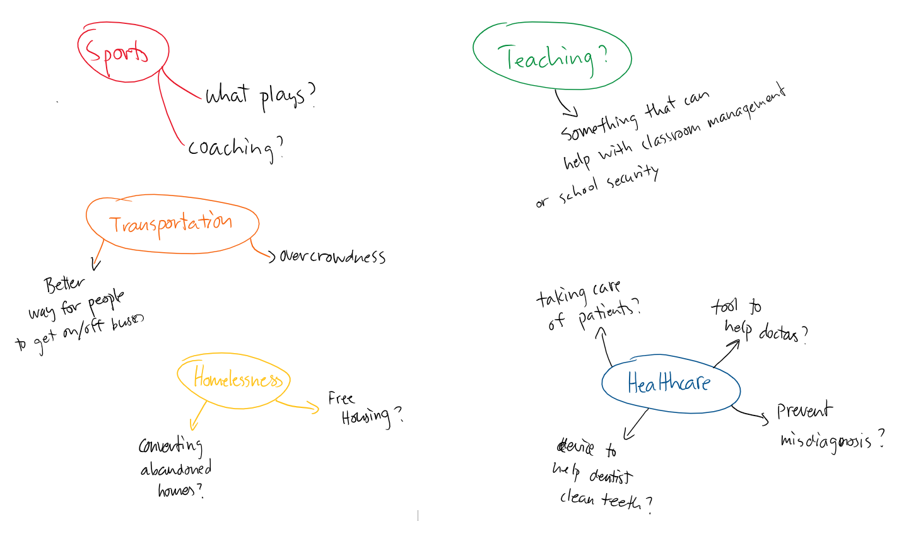

Overview
Nobislink is an android application that was created during a MLH hackathon at the University of Washington Bothell campus. It is an application that takes social networking to the physical world. After evaluation from MLH judges, the application has recieved a Most Socially Impacting award at the event. For more details on the application, feel free to check it out on the Google Play Store below.
Objective
The goal of this project is to investigate and address problems regarding information for a specific user group of our choosing. We had to figure out what group of people we wanted to serve and what problem area needs to be addressed for that user group. The end objective is to be able to take this project and iterate through each design process in order to produce a viable solution for our problem.
Approach
Since this was a group project, we started off brainstorming issues within areas of interests that we are familiar with. Before coming up with a specific user group, it was important to first decide on what general topic to look for information on. After deciding a user group, we would then create a problem statement by looking for issues regarding information technology that the user group is facing. After the problem statement we needed to know more about our users, so the next stage in our project dealt with user research. From there we then dove into drafting our design by sketching and wireframing our creation. Lastly we would then create a prototype which would then go under usability testing to hear feedback.
My Role
As a team, we all equally participated in each early stage of the project. However some parts of the user research and final design stages were branched out and so we all worked on different aspects. During the user research, I focused on reaching out to members of the Washington Trails Association for their input. For the prototyping I assisted with the UI design on Figma and modeling a 3D variant of our product on SketchUp.
Process
Problem Statement and Ideation
Because we have the ability to pick a user group of our choosing, my team and I decided with a topic that is familiar to each of us, which is hiking. Because each of us has experience with hiking in the pacific northwest, it was easier for us to figure out what problems could hikers have in regards to information. The initial target group that my team drafted was Washington State hikers, with the problem being the lack of information regarding weather and obstacles while hiking.

To gain a better understanding of what issues we can help solve for hikers, we conducted brief research to find a key problem: The Washington Trails Association currently has trouble keeping up with trail maintenance. A lack of trail maintenance comes with unexpected hazards for hikers, therefore our team wanted to pursue this issue.
User Research
As a team, we all equally participated in each early stage of the project. However some parts of the user research and final design stages were branched out and so we all worked on different aspects. During the user research, I focused on reaching out to members of the Washington Trails Association for their input. For the prototyping I assisted with the UI design on Figma and modeling a 3D variant of our product on SketchUp.
Personas


Draft Design
As a team, we all equally participated in each early stage of the project. However some parts of the user research and final design stages were branched out and so we all worked on different aspects. During the user research, I focused on reaching out to members of the Washington Trails Association for their input. For the prototyping I assisted with the UI design on Figma and modeling a 3D variant of our product on SketchUp.
Interface and User Flow
As a team, we all equally participated in each early stage of the project. However some parts of the user research and final design stages were branched out and so we all worked on different aspects. During the user research, I focused on reaching out to members of the Washington Trails Association for their input. For the prototyping I assisted with the UI design on Figma and modeling a 3D variant of our product on SketchUp.
Conclusion
Overall there is still a lot of work needed to be done for this project to become reality. Through research and feedback, there is still a lot of flaws that need to be worked on. More research needs to be done to see how our product can be powered besides relying on solar energy, and proper UI design needs to be applied to our interface. Further usability testing is required and physical design changes need to be made as well. But overall the concept and purpose of the design meets our expectations and helps our chosen user group. Our team put in weeks of effort to research our users to better understand their problems, and draft a product that can assist with their issues.